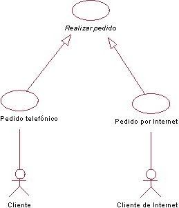
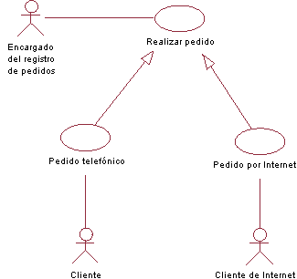
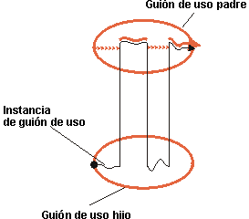
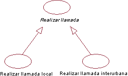

| Directriz: Generalización de guión de uso |
 |
|
| Elementos relacionados |
|---|
ExplicaciónUn guión de uso padre se puede especializar en uno o más guiones de uso hijos que representen formatos del padre más específicos. Ni el padre ni el hijo tienen que ser, necesariamente, abstractos, aunque en la mayoría de casos el padre es abstracto. Un hijo hereda toda la estructura, el comportamiento y las relaciones del padre. Todos los hijos del mismo padre son especializaciones del padre. Se trata de una generalización que se puede aplicar a los guiones de uso (para obtener más información sobre el concepto de generalización tal como se aplica a las clases, consulte el apartado Directriz: Generalización). La generalización se utiliza cuando se encuentran dos o más guiones de uso que tienen puntos comunes en el comportamiento, la estructura y el objetivo. Cuando sucede, puede describir las partes compartidas en un nuevo guión de uso, con frecuencia abstracto que, a continuación, se especializa por medio de guiones de uso hijos. Ejemplo:  Los guiones de uso Pedido por teléfono y Pedido por Internet son especializaciones del guión de uso abstracto Hacer pedido. En un sistema de Gestión de pedidos, los guiones de uso Pedido por teléfono y Pedido por Internet comparten mucho en cuanto a estructura y comportamiento. Un guión de uso general Hacer pedido se define en que se ha definido la estructura y el comportamiento común. El guión de uso abstracto Hacer pedido no tiene que completarse por sí mismo, pero proporciona una infraestructura de comportamiento general que pueden completar los guiones de uso hijos. El guión de uso padre no siempre es abstracto. Ejemplo: Considere el sistema Gestión de pedidos del ejemplo anterior. Se puede añadir un actor Encargado del registro de pedidos, que pueda entrar pedidos en el sistema en nombre de un cliente. Este actor inicia el guión de uso Hacer pedido general, que ahora debe tener un flujo de sucesos completo descrito. El guión de uso hijo puede añadir comportamiento a la estructura que proporciona el guión de uso padre, y también puede modificar comportamiento del padre.  El actor Encargado del registro de pedidos puede crear instancias el guión de uso general Hacer pedido. Hacer pedido también se puede especializar por medio de los guiones de uso Pedido por teléfono o Pedido por Internet. El guión de uso hijo depende de la estructura (consulte el apartado Directriz: Guión de uso, donde se trata la estructura del flujo de sucesos) del guión de uso padre. El guión de uso hijo puede añadir comportamiento adicional al padre por medio de la inserción de segmentos de comportamiento en el comportamiento heredado, o bien, declarando relaciones de inclusión y ampliación en el guión de uso hijo. El hijo puede modificar segmentos de comportamiento heredados del padre , aunque se debe hacer con cuidado con el objeto de mantener la intención del padre. El hijo mantiene la estructura del guión de uso padre, lo que significa que todos los segmentos de comportamiento, descritos en pasos o subflujos del flujo de sucesos del padre, debe seguir existiendo, pero el hijo puede modificar contenido de dichos segmentos de comportamiento. Si el padre es un guión de uso abstracto, puede tener segmentos de comportamiento incompletos. El hijo debe completarlos y convertirlos en significativos para el actor. Un guión de uso padre no necesita tener una relación a otro actor si es un guión de uso abstracto. Si dos guiones de uso hijos se especializan el mismo padre (o base), las especializaciones son independientes entre sí, por lo que se pueden ejecutar en instancia de guión de uso separadas. Se diferencia de las relaciones de ampliación e inclusión, donde implícita o explícitamente varias adiciones modifican una instancia de guión de uso ejecutando el mismo guión de uso de base. Tanto la inclusión como la generalización de guiones de uso se pueden utilizar para reutilizar comportamiento entre guiones de uso en el modelo. La diferencia es que con la generalización de guiones de uso, la ejecución de los hijos depende de la estructura y el comportamiento del padre (la parte reutilizada), mientras que en una relación de inclusión, la ejecución del guión de uso de base sólo depende del resultado de la función que lleva a cabo el guión de uso de inclusión (la parte reutilizada). Otra diferencia es que en una generalización, los hijos comparten similitudes en cuanto al objetivo y la estructura, mientras que en la relación de inclusión, los guiones de uso de base que reutilizan la misma inclusión pueden tener objetivos totalmente diferentes, pero necesitan que se lleve a cabo la misma función. Ejecución de la generalización de guiones de usoUna instancia de guión de uso que ejecute un guión de uso hijo sigue el flujo de sucesos descritos para el guión de uso padre, insertando comportamiento adicional y modificando comportamiento según se ha definido en el flujo de sucesos del guión de uso hijo.  La instancia de guión de uso sigue al guión de uso padre, con comportamiento insertado o modificado según se ha descrito en el guión de uso hijo. Descripción de la generación de guiones de usoPor lo general, no se describe la relación de generalización en sí misma. En vez de ello, en el flujo de sucesos del guión de uso hijo se especifica cómo se deben insertar los nuevos pasos en el comportamiento heredado, y cómo se debe modificar el comportamiento heredado. Si el hijo especializa más de un padre (herencia múltiple), en la especificación del hijo debe establecer, explícitamente, cómo se deben intercalar las secuencias de comportamiento de los padres en el hijo. Ejemplo de usoConsidere los esquemas paso a paso siguientes de los guiones de uso para un sistema telefónico simple: Hacer llamada local
Hacer llamada internacional
El texto en azul es muy similar en ambos guiones de uso. Si los dos guiones de uso son tan parecidos, se debe considerar la posibilidad de fusionarlos en uno, en el que subflujos alternativos muestren las diferencias entre las llamadas locales e internacionales. Sin embargo, si la diferencia entre ellos tiene cierta trascendencia, y muestra claramente en el modelo de guión de uso la relación entre la llamada local e internacional, se puede extraer comportamiento común en un guión de uso nuevo y más general, denominado Hacer llamada. En un diagrama de guión de uso, la relación de generalización creada se podría mostrar del modo siguiente:  Los guiones de uso Hacer llamada local y Hacer llamada internacional heredan del guión de uso abstracto Hacer llamada. |
© Copyright IBM Corp. 1987, 2006. Reservados todos los derechos. |